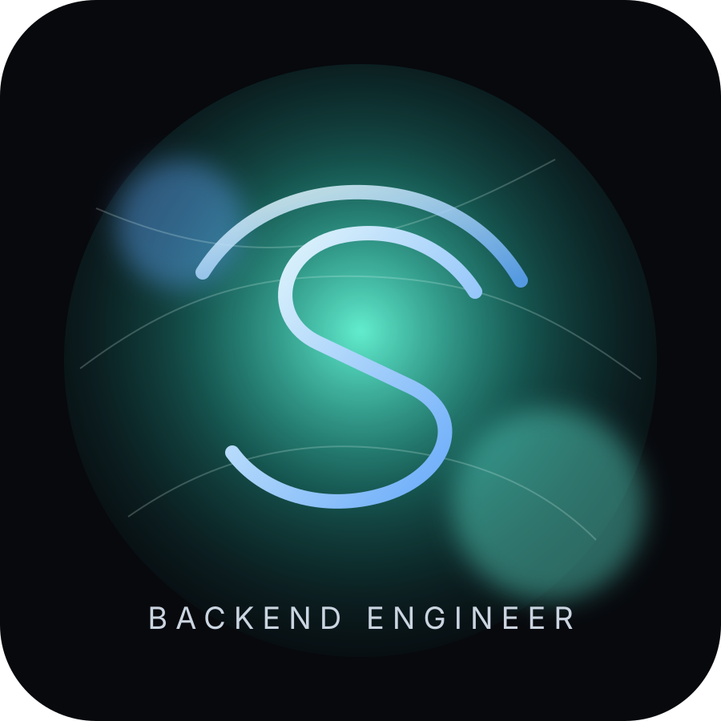

about
I own backend services from design to production support.
Siddharth is a backend engineer focused on Java, Spring Boot, microservices, application security, CI/CD, testing, observability, and modernization in regulated healthcare environments.

CurrentlyApplication Software Engineer, Oracle Health
FocusBackend, security, reliability
Experience5+ years
profile
Quality-focused backend delivery.
I design and operate backend services where correctness, upgrade safety, monitoring, and release readiness all matter. My work has centered on enterprise healthcare systems, from REST APIs and microservice modernization to security remediation and production support.
I am strongest in the space between product engineering and platform ownership: taking a backend service through implementation, validation, CI/CD, release, monitoring, and follow-up fixes after real production feedback.
engineering strengths
- Backend ownership: Take services from design and implementation through validation, release, and production support.
- Security-first delivery: Convert security findings into remediated, validated, and release-ready dependency changes.
- Quality mindset: Focus on automated testing, regression prevention, static analysis, review discipline, and quality gates.
- Operational reliability: Experienced with monitoring, incident response, production debugging, dashboards, and support coordination.
- Automation mindset: Convert repetitive engineering workflows into reusable productivity tooling.
tools I reach for
Java backend stack plus the delivery system around it.
Languages
- Java 8/11/17
- SQL
- PostgreSQL
Backend
- Spring Boot
- Spring Security
- Hibernate/JPA
- REST APIs
- Microservices
- API contracts
Architecture
- Distributed systems
- Fault tolerance
- Retry strategies
- Idempotency
- SOLID
- Multithreading
Cloud and containers
- AWS
- Docker
- Kubernetes
CI/CD and DevOps
- GitLab CI/CD
- Jenkins
- CircleCI
- Git
- Quality gates
Testing
- JUnit
- Mockito
- Integration testing
- Postman
- JMeter
- LoadRunner
Monitoring
- Splunk
- Prometheus
- APM dashboards
- Incident response
Security and tools
- CVE remediation
- Secure SDLC
- SonarQube
- PMD
- Checkstyle
- Jira
- Swagger